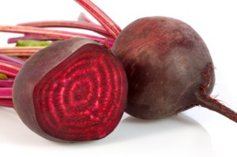

रोजाना थोड़ा सा चुकंदर खाने से मिलने लगेंगे ये गजब के RESULTS-----
______________________________________________________
चुकंदर का सेवन अधिकतर लोग सलाद के रूप में या जूस बनाकर करते हैं। इसके लाल रंग के कारण अधिकतर लोग सिर्फ इसे खून बढ़ाने वाली चीज के रूप में ही जानते हैं और इसका उपयोग भी इसीलिए करते हैं। लेकिन बहुत कम लोग जानते हैं इसे खाने के एक नहीं अनेक फायदे हैं। आज हम बताने जा रहे हैं कुछ ऐसे ही फायदों के बारे में.....
गुणों से भरपूर- सोडियम पोटेशियम, फॉस्फोरस, क्लोरीन, आयोडीन, आयरन और अन्य महत्वपूर्ण विटामिन पाए जाते है इसे खाने से हिमोग्लोबिन बढ़ता है।उम्र के साथ ऊर्जा व शक्ति कम होने लगती है, चुकंदर का सेवन अधिक उम्र वालों में भी ऊर्जा का संचार करता है। इसमें एंटीआक्सीडेंट पाए जाते हैं। जो हमेशा जवान बनाएं रखते हैं।
त्वचा के लिए फायदेमंद- यदि आपको आलस महसूस हो रही हो या फिर थकान लगे तो चुकंदर का खा लीजिये। इसमें कार्बोहाइड्रेट होता है जो शरीर की एनर्जी बढाता है।सफेद चुकंदर को पानी में उबाल कर छान लें। यह पानी फोड़े, जलन और मुहांसों के लिए काफी उपयोगी होता है। खसरा और बुखार में भी त्वचा को साफ करने में इसका उपयोग किया जा सकता है।
दिल की बीमारियां- चुकंदर में नाइट्रेट नामक रसायन होता है जो रक्त के दबाव को काफी कम कर देता है और दिल की बीमारी के जोखिम को भी कम करता है। चुकंदर एनीमिया के उपचार में बहुत उपयोगी माना जाता है। यह शरीर में रक्त बनाने की प्रक्रिया में सहायक होता है। आयरन की प्रचुरता के कारण यह लाल रक्त कोशिकाओं को सक्रिय रखने की क्षमता को बढ़ा देता है। इसके सेवन से शरीर की रोग प्रतिरोधक क्षमता और घाव भरने की क्षमता भी बढ़ जाती है।
हाई ब्लड प्रेशर में- लंदन यूनिवर्सिटी के शोधकर्ताओं ने रोज चुकंदर का जूस पीने वाले मरीजों को अध्ययन में शामिल किया। उन्होंने रोज चुकंदर का मिक्स जूस [गाजर या सेब के साथ] पीने वाले मरीजों के हाई ब्लड प्रेशर में कमी पाई। अध्ययन के मुताबिक रोजाना केवल दो कप चुकंदर का मिक्स जूस पीने से ब्लड प्रेशर नियंत्रित रहता है। हालांकि इसका ज्यादा सेवन घातक साबित हो सकता है।
कब्ज और बवासीर-चुकंदर का नियमित सेवन करेंगे, तो कब्ज की शिकायत नहीं होगी। बवासीर के रोगियों के लिए भी यह काफी फायदेमंद होता है। रात में सोने से पहले एक गिलास या आधा गिलास जूस दवा का काम करता है।
लोग जिम में जी तोड़ कर वर्कआउट करते हैं उन्हें खाने के साथ चुकंदर खाना चाहिए। इससे शरीर में एनर्जी बढती है और थकान दूर होती है। साथ ही अगर हाई बीपी हो गया हो तो इसे पीने से केवल 1 घंटे में शरीर नार्मल हो जाता है।